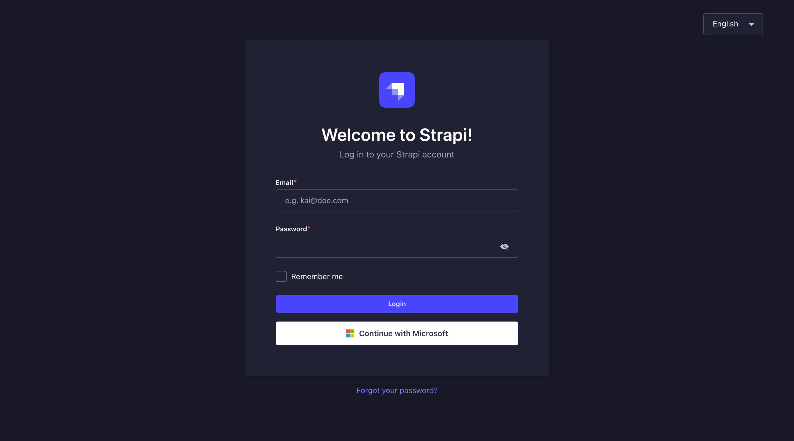
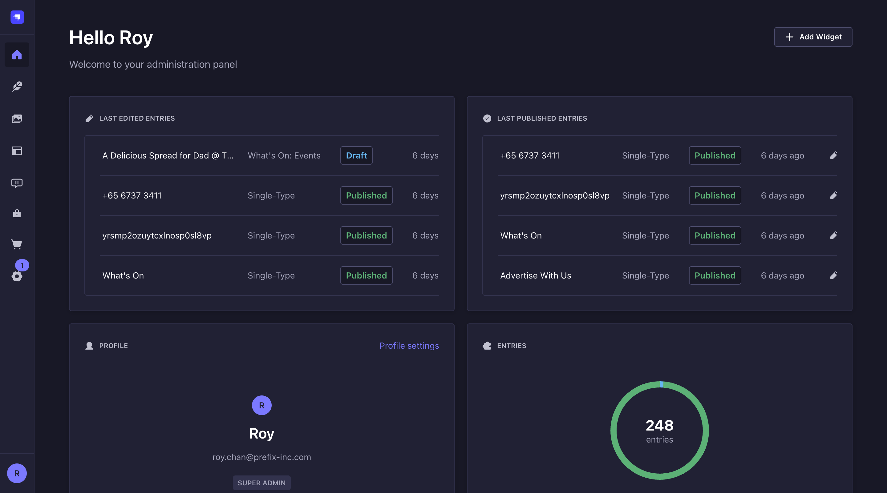
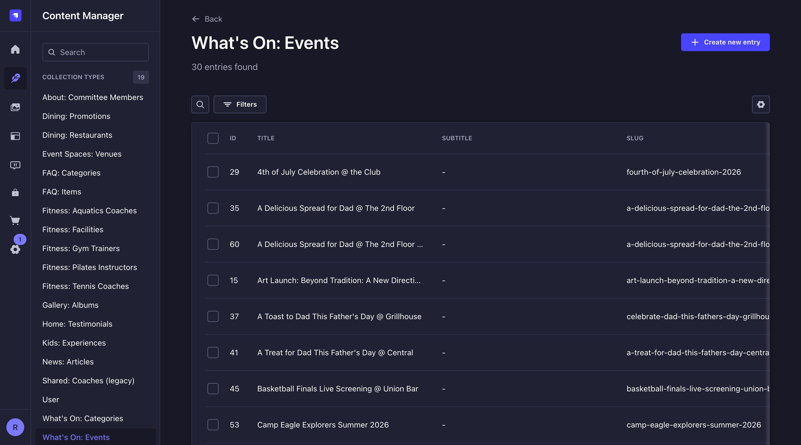
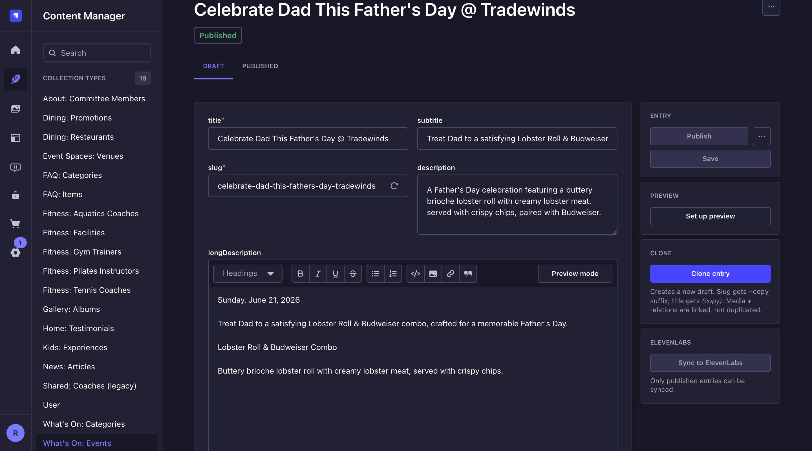
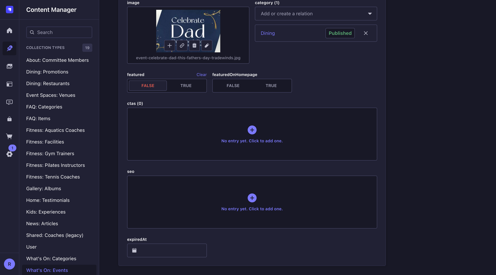
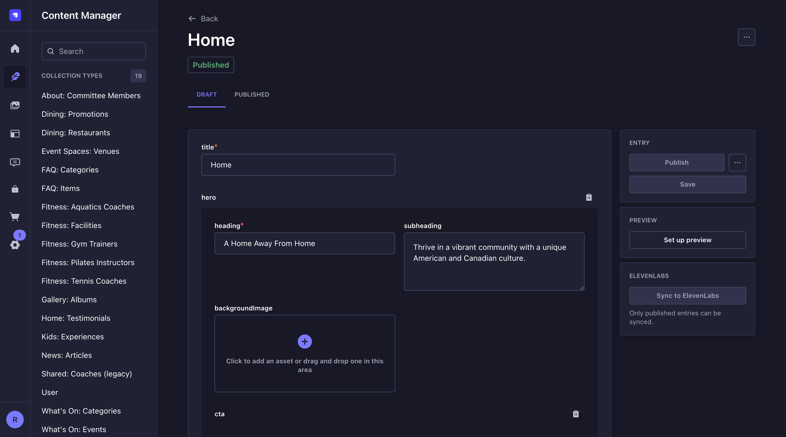
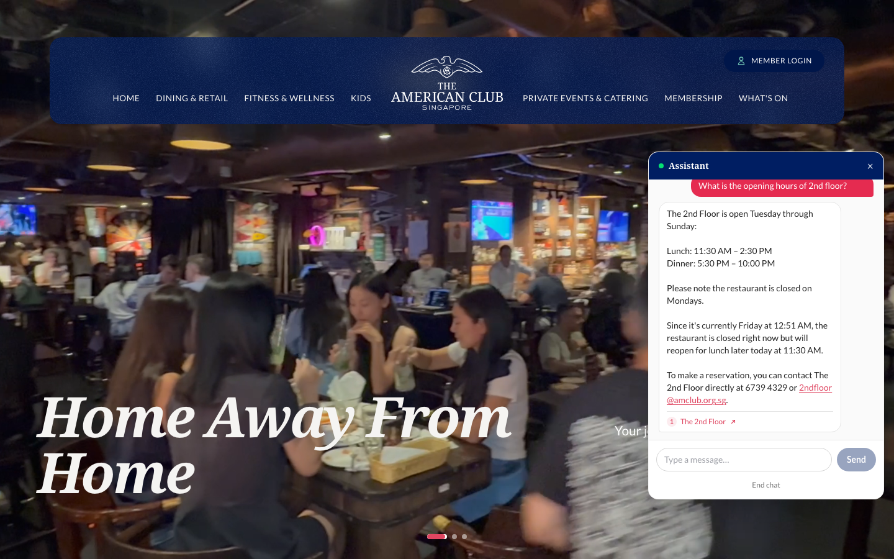
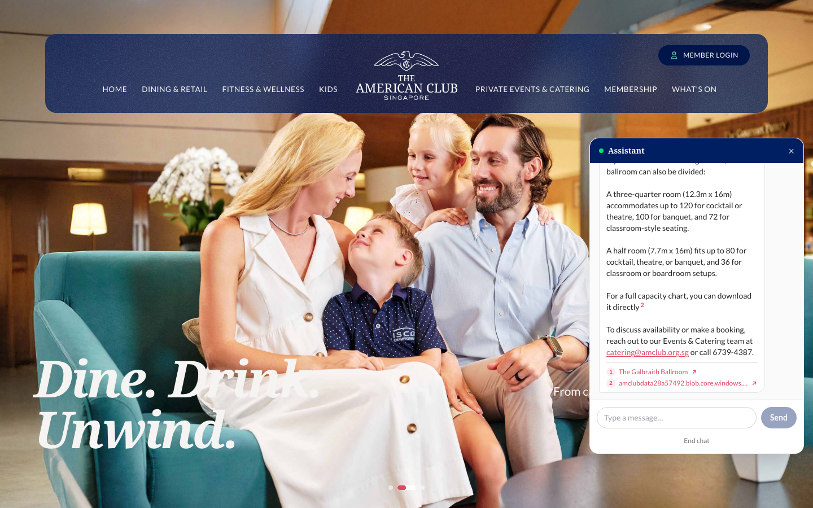
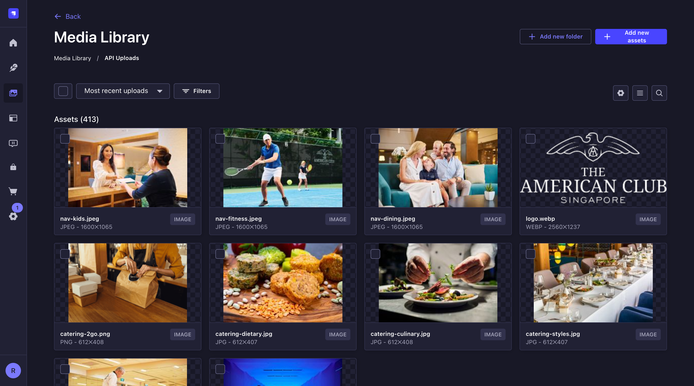

CMS User Guide
The American Club Website
Everything you need to update text, images, events, promotions, and page content on the Club's website — without touching any code. Changes you publish appear on the public website within moments.
1. Welcome
The Club's website does not store its words and pictures inside the website code. Instead, all content lives in a Content Management System (CMS) called Strapi. When a visitor opens a page, the website fetches the latest published content from the CMS and displays it.
That means you can change almost anything visitors see — event listings, dining promotions, headings, photos, opening hours, PDFs — by editing it in the CMS and pressing Publish. No developer required.
Save keeps your work as a draft (invisible to the public). Publish puts it on the live website. Nothing reaches visitors until you publish it.
2. The Three Websites
There are three copies of the Club website. They look the same but serve different purposes:
| Environment | Public website | CMS login | What it's for |
|---|---|---|---|
| PRODUCTION | amclub.org.sg | amclub.org.sg/admin | The real website members see. This is where you do your day-to-day content updates. |
| UAT | uat.amclub.org.sg | uat.amclub.org.sg/admin | A rehearsal copy used to review and approve upcoming website changes before they go live. Safe to practise in. |
| DEV | dev.amclub.org.sg | dev.amclub.org.sg/admin | The development team's workbench. Content here changes frequently and may be reset — don't rely on it. |
Before editing, glance at the browser address bar. If it says uat. or dev., you are
not on the live site — edits there will not appear on the real website. For live updates, always use
amclub.org.sg/admin.
Practise on UAT first. You can experiment freely there without any risk to the live website. All screenshots in this guide were taken on UAT — production looks exactly the same.
Where the web addresses live (DNS)
As part of this project the Club's domain records for amclub.org.sg were migrated to
Cloudflare — that is now where the public internet is told which server each address
(amclub.org.sg, uat.…, dev.…) points to. Day-to-day you never need to touch
this; it matters only when the website's underlying IP address changes.
Computers inside the Club (on Club Wi-Fi or the office network) do not use Cloudflare — they use the Club's internal DNS, which holds its own copy of these records. If the website's IP address ever changes, Cloudflare gets updated by the website team, but the Club's IT team must update the internal DNS manually. The tell-tale sign it was missed: the website works fine on your phone's mobile data but not on Club Wi-Fi. If that happens, contact Club IT and the website team.
3. Logging In
Open the CMS login page for your environment (e.g. amclub.org.sg/admin). You'll see this screen:

There are two ways in:
- Continue with Microsoft — recommended for Club staff. Click the white button and sign in with your usual Club Microsoft account. No separate password to remember.
- Email + password — enter the email and password you were invited with, then click Login.
Forgot your password?
Click "Forgot your password?" under the login button and follow the email instructions. If no email arrives, ask a website administrator to re-invite you (see If Something Goes Wrong).
Most content editors have the Editor role — you can create, edit, and publish content, but cannot change website structure or user accounts. That's intentional and keeps the site safe.
Managing users & roles (for administrators)
If you have the Super Admin role you can invite colleagues and control what they can do. Everything happens in Settings → Administration Panel → Users.
| Role | Can do | Give it to |
|---|---|---|
| Super Admin | Everything — content, users, settings, website structure | The maintenance team and one Club owner only |
| Editor | Create, edit and publish all content; upload media | Club content staff — this is the normal role |
| Author | Create and edit only their own entries | Occasional contributors, if ever needed |
To invite a colleague:
- Go to Settings → Users → Invite new user.
- Enter their name and email, choose the role (usually Editor), and click Invite user.
- Copy the invitation link and send it to them. Their account shows Inactive until they accept and set a password (or they can simply use Continue with Microsoft with the same email).
To change or remove someone's access: open the user in the same list — you can change their role, or switch Active off to suspend access. Prefer deactivating over deleting, so their name stays on the entries they edited.
User accounts are separate per environment. Inviting someone on UAT does not give them access to the live CMS — invite them on amclub.org.sg/admin (and on UAT too if they'll help review changes).
4. The Dashboard
After logging in you land on the dashboard:

Useful parts:
- Last edited entries — quick links back to whatever you (or colleagues) touched recently. Handy for "where was I yesterday?"
- Last published entries — what most recently went live.
- Left icon bar — the navigation. The two you'll use daily are Content Manager (the pencil icon — all website content) and Media Library (the picture icon — all images and files).
Content-Type Builder, Settings, and Marketplace in the left menu are for the development team. Changing things there can break the website.
5. How Content Is Organised
Open Content Manager from the left menu. Content is split into two groups, listed in the panel on the left:
Collection Types — lists of similar things
Each collection holds many entries of the same kind. Names are prefixed with the part of the website they belong to, so "What's On: Events" feeds the What's On section, "Dining: Promotions" feeds Dining, and so on. The ones editors use most:
| Collection | What it controls |
|---|---|
| What's On: Events | Every event listed on the What's On pages and homepage event carousel |
| What's On: Categories | The event filter categories (Dining, Kids, Sports…) |
| Dining: Promotions | Dining promotions and offers |
| Dining: Restaurants | Each restaurant's name, description, hours, menus, photos |
| News: Articles | News stories on the News page |
| Gallery: Albums | Photo albums on the Gallery page |
| FAQ: Items / FAQ: Categories | Questions and answers across the site |
| Event Spaces: Venues | Ballrooms and function rooms for hire |
| Fitness: Gym Trainers / Pilates Instructors / Tennis Coaches / Aquatics Coaches | Coach profiles with photos and bios |
| About: Committee Members | The General Committee profiles on the About page |
| Home: Testimonials | Member quotes shown on the homepage |
Single Types — one-of-a-kind pages
Each single type is the content of one specific page (or sitewide element). For example "Home: Page" holds the homepage hero text, the stats numbers, and section headings; "Global: Header" and "Global: Footer" control the navigation menu and footer that appear on every page.

Use the Search box at the top of the Content Manager panel to filter the list of types, and the Search / Filters buttons above an entry list to find a specific entry by title.
6. Editing an Entry
Click any entry in a list to open it. Here's a typical event:

The basic flow is always the same:
- Change the fields you need.
- Click Save (right panel) — stores a draft.
- Click Publish — puts it on the live website.
Field types you'll meet
| Field | How it works |
|---|---|
| Short text (title, subtitle, location) | Plain text, one line. Fields marked with a red * are required. |
| Long text (description) | Plain paragraph text, no formatting. |
| Rich text (longDescription) | Has a toolbar — bold, italic, lists, links, headings. Use Preview mode to check how it reads. |
| Slug | The entry's web address ending, e.g. fathers-day-grillhouse →
amclub.org.sg/whats-on/fathers-day-grillhouse. Auto-generated from the title — avoid changing
it after publishing, because saved links and QR codes would break. |
| Date / time | Pick from the calendar pop-up. The separate time text field is the human-friendly wording shown on the page, e.g. "6:00 PM – 9:00 PM". |
| True / false toggles (featured, featuredOnHomepage) | Click TRUE or FALSE. featured highlights the entry in its section; featuredOnHomepage also shows it in the homepage carousel. |
| Relation (category) | Links this entry to another, e.g. assigning an event to the "Dining" category. Pick from the drop-down; remove with the ✕. |
| Component groups (ctas, seo) | Expandable blocks of grouped fields. ctas adds buttons to the page; seo sets the title/description Google shows. Click "No entry yet. Click to add one." to create. |
Rich text & Markdown — formatting longer copy
Some fields hold more than one plain line — a coach biography, an event's long description, a restaurant's opening hours, an FAQ answer. These use one of two formatting editors. They look a little different and it's worth knowing which is which, because only one of them understands Markdown.
| Editor | What you'll see | Fields that use it |
|---|---|---|
| Markdown editor |
A box with an Edit / Preview tab and a small toolbar (B, i, link, list, image…). You can type Markdown symbols directly, or click the toolbar and it inserts them for you. The Preview tab shows the finished look. | longDescription on Events; the bio on Gym Trainers, Pilates Instructors, Tennis Coaches & Aquatics Coaches. |
| Blocks editor |
A cleaner, page-like editor. You don't type symbols — you click the ＋ / toolbar to choose a heading, list, quote, etc., and format selected text with the floating toolbar. What you see is what you get. | answer on FAQ Items; the body of News Articles; openingHours and detailedDescription on Dining: Restaurants. |
If the field has an "Edit / Preview" toggle, it's the Markdown editor — use the cheatsheet below. If it has a ＋ "Click to add an element" row and a pop-up block menu, it's the Blocks editor — just click the buttons; typing Markdown symbols there won't format anything (though a few shortcuts work — see the tip after the cheatsheet).
Markdown cheatsheet (for the Markdown editor)
Markdown is a simple way to add formatting by typing a few symbols. The Club's CMS supports GitHub-Flavored Markdown (GFM) — the most widely used version. Type the symbols on the left and you get the result on the right. Tip: you rarely need to memorise these — click the toolbar buttons and they insert the symbols for you, then check the Preview tab.
| What you type | What it becomes | ||||||
|---|---|---|---|---|---|---|---|
# Big heading
## Smaller heading
### Smaller still |
Big headingSmaller heading · Smaller still |
||||||
**bold text**
_italic text_
~~crossed out~~ |
bold text · italic text · |
||||||
- First item
- Second item
- Third item |
|
||||||
1. Book a court
2. Arrive 10 mins early
3. Bring your card |
|
||||||
[Book now](/membership)
[Email us](mailto:info@amclub.org.sg) |
|||||||
> Members enjoy priority booking
> up to 14 days ahead. |
Members enjoy priority booking up to 14 days ahead. |
||||||
Open **6:00 PM – 9:00 PM**
nightly.
--- |
Open 6:00 PM – 9:00 PM nightly. |
||||||
| Day | Hours |
| --- | --- |
| Mon–Fri | 6 AM–10 PM |
| Sat–Sun | 8 AM–8 PM | |
|
• Leave a blank line between paragraphs — two lines of text with no gap run together into one.
• A single line break in the middle of a paragraph is usually ignored; use a blank line, or end a line with
two spaces to force a line break.
• Put a space after the symbol: # Heading ✓, #Heading ✗;
- item ✓, -item ✗.
• Keep our house style: times as 6:00 PM (uppercase, no periods).
A worked example
This is what an event's longDescription might look like in the Markdown editor, and how it reads once published:
| In the editor (what you type) | On the website (Preview) |
|---|---|
Celebrate **Father's Day** at Grillhouse with a
4-course feast.
**Highlights**
- Free-flow craft beer
- Live carving station
- A gift for every dad
Seats are limited — [reserve a table](/dining/grillhouse). |
Celebrate Father's Day at Grillhouse with a 4-course feast. Highlights
Seats are limited — reserve a table. |
Copying formatted text from Word, Google Docs, or a webpage can drag invisible formatting and odd characters
into the field. Paste as plain text (Cmd+Shift+V /
Ctrl+Shift+V), then add formatting with the toolbar or Markdown.
In the Blocks editor, typing a few shortcuts also works: ## then a space makes a
heading, - starts a bullet list, > a quote, and **word** turns bold —
but it always saves as blocks, never as raw Markdown.
Images & files on an entry

To change an image, hover over it and use the small buttons: ＋ Add (choose a different image), Edit (crop/details), or Delete (remove it from this entry — the file stays in the Media Library). When adding, you can pick an existing image from the library or upload a new one.
Upload photos at least 1600 px wide for banners/heroes and around 800 px wide for cards. JPEG for photos, PNG for logos. The website resizes them automatically — bigger is safer than smaller.
7. Draft vs Published
Every entry is in one of three states, shown as a coloured badge in lists and at the top of the editor:
| Badge | Meaning | Visible to the public? |
|---|---|---|
| Draft | Saved but never published | No |
| Published | Live, and the draft matches what's live | Yes |
| Modified | Live, but you've saved newer changes that aren't published yet | The old version stays visible until you publish |
At the top of the editor are two tabs: DRAFT (what you're editing) and PUBLISHED (a read-only view of what's currently live). Use the PUBLISHED tab to compare before you push changes out.
Unpublishing
To take something off the website without deleting it, open the entry, click the ⋯ (More document actions) button next to Publish, and choose Unpublish. The entry returns to Draft and disappears from the site.
Prefer Unpublish over Delete. A deleted entry (and its slug/web address) cannot be recovered from the admin panel.
8. Creating & Cloning Entries
From scratch
- Open the collection (e.g. What's On: Events) and click ＋ Create new entry (top right).
- Fill in at least the required fields (marked *).
- Save, review, then Publish.
Cloning — the fast way for recurring items
For something similar to an existing entry (a monthly event, a repeating promotion), open the existing entry and
click Clone entry in the right-hand CLONE panel. This creates a new
draft copy: the title gets a (copy) suffix and the slug gets -copy.
Rename both, update the dates and details, then publish.
The clone shares the original's images and category links (they're linked, not duplicated). Changing the clone's image assignment won't affect the original entry.
9. Editing Page Content (Single Types)
Single types work exactly like entries — Save then Publish — but they're structured as the sections of one page. Here's Home: Page:

Things to know:
- Sections appear in the order they're shown on the page: hero → aboutSection → events → services → experience → moments → faq.
- Repeatable items (hero slides, stats, service features, experience tabs) can be re-ordered by dragging the handle on the right of each row, added with ＋ Add an entry, or removed with the bin icon.
- CTA blocks (call-to-action buttons) have a label (the button text), an
href (where it goes — use
/membershipstyle for pages on our own site, fullhttps://…links for external sites), and an isExternal toggle (set TRUE for external links so they open in a new tab). - Layout pickers like variant, dark, or titlePosition control appearance — if unsure, leave them as they are.
Global: Header controls the navigation menu (labels, order, dropdown links) and Global: Footer the footer columns, contact details, and social links. Edits there appear on every page — publish carefully.
10. Special Fields Worth Knowing
expiredAt — auto-hiding old events and promotions
Events and dining promotions disappear from listing pages automatically once their date passes. The optional expiredAt field overrides that: set it if you want the item hidden on a different date than its event date (e.g. a promotion that should stay visible all month).
- Leave expiredAt empty → the entry hides after its own date passes.
- Set expiredAt → the entry hides after that date instead.
- Expired entries are only hidden from listings — anyone with a direct link can still open the detail page, and the entry stays in the CMS for you to reuse or clone next year.
Sync to ElevenLabs — the website chatbot
The website chatbot answers member questions using published content. Published events and promotions are synced to its knowledge base automatically (expired ones are removed hourly). The Sync to ElevenLabs button in the right panel forces an immediate re-sync after a significant edit — useful but rarely needed. It only works on published entries.
Featured On Homepage — curating the events strip
The scrolling events strip on the homepage shows upcoming events you've marked with the "Featured On Homepage" toggle on each Event entry. Use it to hand-pick what members see first. If nothing is featured, the strip falls back to the next upcoming events automatically, so it never goes blank — but curating it is better. Past events never appear, regardless of the toggle.
Mobile Fit Media — the homepage banner on phones
On the Home Page → Hero section there is a Mobile Fit Media toggle. Off (the default), phones show the banner image full-screen, cropped to fit. On, phones show the entire image uncropped with the title and button below it — useful when the artwork itself contains text that must not be cut off. It only affects phones; desktop is unchanged.
SEO — how pages appear on Google and social media
Most pages have an SEO section with a meta title, meta description, sharing image and canonical URL. These control the page's Google search snippet and its preview card when a link is shared on social media or WhatsApp.
- Site-wide defaults live in Global: Site Configuration (the Site Name and Default SEO fields). Every page uses these unless it says otherwise.
- Per-page override: fill in a page's own SEO fields to override the defaults — field by field. A page with only a meta title still inherits the default description and image.
- Keep meta titles under ~60 characters and descriptions under ~160 so Google doesn't cut them off.
11. The Website Chatbot
Every page of the public website carries an Assistant bubble (bottom-right). It answers member and visitor questions using your published content — the same pages, PDFs and FAQ answers you manage in this CMS. You never edit the chatbot directly: publish good content and the chatbot gets smarter automatically.
Answers cite their sources
Every factual answer ends with one or more numbered source chips showing the page the information came from — by page title, e.g. ① The 2nd Floor ↗. Clicking a chip opens that page behind the chat window (or downloads the document, for PDFs), so members can verify everything themselves.

What the chatbot knows
- Published entries of the main content types: pages, restaurants, event spaces, fitness facilities, kids experiences, events, dining promotions, news, membership pages, committee members and FAQs. Drafts are invisible to it.
- Attached PDFs too. Menus, price lists, party packages and capacity charts linked on a page are read into the knowledge base. In the example below, the room dimensions come from the page and the per-setup capacities come from the attached capacity-chart PDF.
- The Master FAQ repository — the approved FAQ answers document, which also sets the assistant's tone.

Make your content chatbot-friendly
- Fill in the structured fields — description, capacity, location, phone, email, opening hours. The chatbot can only quote what's in the entry: a ballroom without a capacity value can't answer "how many people fit?".
- Attach the document when the detail lives in a PDF (menus, price lists, capacity charts) — the chatbot reads those too.
- Publish. Publishing an entry updates the chatbot's knowledge automatically within a minute or two; expired events are removed hourly.
1) Check the entry is published (not draft). 2) Check the information is actually in a field or attached PDF on that entry. 3) Use the Sync to ElevenLabs button in the entry's right panel to force a refresh. If it still can't answer, contact the technical administrator — the knowledge-base index may need rebuilding (see the Tech Admin Guide).
12. The Media Library
All images, PDFs, and videos live in the Media Library (picture icon in the left menu).

- Add new assets uploads files (you can drag-and-drop several at once).
- Click a file to see its details, replace it, or copy its link.
- Deleting a file here removes it everywhere it is used on the website — check before deleting.
Name files in lowercase-with-hyphens before uploading:
fathers-day-grillhouse.jpg ✓ · Fathers Day GRILLHOUSE.JPG ✗.
No spaces, capitals, or underscores. Consistent names keep the library searchable.
13. House Style Rules
- Times use uppercase AM/PM without periods:
6:00 PM✓,6.00 p.m.✗. - Dates in body text are written out:
Sunday, June 21, 2026. - Venue names match their official names exactly (Grillhouse, Tradewinds, Union Bar, The 2nd Floor, Central…).
- Event titles follow the pattern Name @ Venue, e.g.
Trivia Night @ Union Bar. - Links to our own pages start with
/(e.g./whats-on); only external sites use fullhttps://addresses with isExternal set to TRUE. - Keep subtitles to one short sentence — they appear on cards where space is tight.
14. Checking Your Changes
- Publish the entry.
- Open the public page in a new browser tab (e.g.
amclub.org.sg/whats-on) and refresh. Changes normally appear immediately; if not, hard-refresh with Cmd+Shift+R (Mac) or Ctrl+Shift+R (Windows). - Check the page on your phone too — most members browse on mobile.
Title spelled correctly · date and time right (AM/PM uppercase) · image looks good · category assigned · links tested · slug sensible.
15. If Something Goes Wrong
| Problem | What to check / do |
|---|---|
| My change isn't on the website | 1) Did you click Publish (not just Save)? A Modified badge means unpublished changes. 2) Hard-refresh the page. 3) Are you editing the same environment you're viewing? (Editing on UAT won't change the live site.) |
| An event vanished from the listings | Its date (or expiredAt) has passed — that's the automatic expiry working. Update the date or clear expiredAt and republish to bring it back. |
| Image thumbnails look broken in the CMS | Usually temporary — refresh. If it persists, tell the website administrator (it's a server setting, not something you did). |
| I can't log in | Try Continue with Microsoft first. Otherwise use "Forgot your password?". If your account shows as Inactive you'll need an administrator to re-invite you. |
| I deleted/changed something by mistake | Stop editing and contact the website administrator straight away — the sooner they know, the easier it is to restore. |
| The Publish button is greyed out | Either nothing has changed since the last publish, or a required field (marked *) is empty — scroll up for a red error message. |
Who to contact
For account access, missing content types, or anything that looks like a fault rather than a content issue, contact the website maintenance team (Prefix) or your internal website administrator. Technical staff can find diagnostic procedures in the Technical Admin Guide.